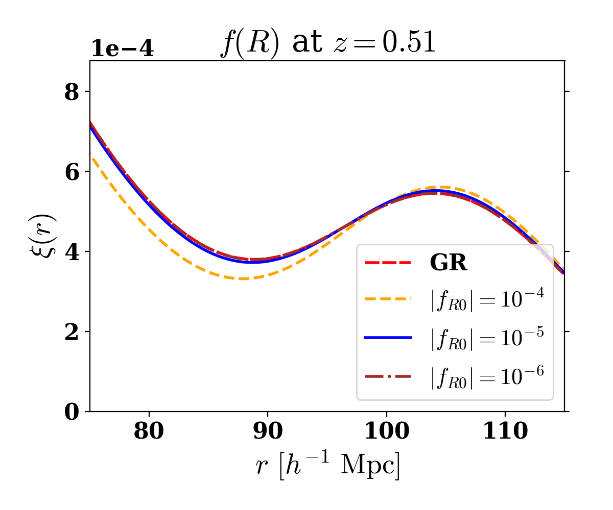

Current Research
Type Ia Supernova Cosmology
The amount light gets refracted in our atmosphere depends on its wavelength. This is because our atmosphere's refractive index is wavelength-dependent. This phenomenon is called Diffential Chromatic Refraction (DCR). While we need to correct for DCR to accurately measure supernova flux, DCR can actually help us measure supernova redshifts!
A Type Ia supernova (SN Ia) occurs when a white dwarf accretes enough mass from its companion to reach the Chandrasekhar limit, or about 1.44 solar masses. At this point, the white dwarf becomes unstable and violently explodes. Because this explosion happens at a specific mass, the absolute brightness of SNe Ia are quite consistent, allowing cosmologists to use them as standardizable candles. By observing many SNe Ia at different redshifts, cosmologists can learn about the expansion history of our universe.
Baryon Acoustic Oscillations (BAO)
Before our universe was about 400,000 years old, the universe consisted mostly of photons, dark matter, and baryonic (or ordinary) matter. When stochastic fluctuations occurred, the photon-baryon plasma portion of the overdensity would be pushed out by radiation pressure, while the gravity of the dark matter would pull it inwards, causing oscillations. These oscillations then froze out at the surface of las scattering when photons started propagating freely. This signature of over- and under-densities expanded along with the universe. In the two-point matter correlation function, this BAO feature is imprinted as a peak and a dip at around 100 Mpc/h.
My BAO works have focused on what we call the Linear Point (LP), which is the midpoint between the peak and the dip scales, and more stable than either the peak or the dip under non-linearities. We found that the LP is more stable even if the universe is governed my modified gravity rather than Einstein's general relativity. Additionally, we can measure the LP with more precision than the dip or the peak.
Former Research

The Cosmic Infrared Background (CIB)
The Cosmic Infrared Background, or the CIB, is mostly the emission from dust in star-forming galaxies at redshifts 0 to about 4. In these star-forming galaxies, young stars radiate in the ultraviolet or visible wavelengths, and this radiation gets absorbed by the surrounding dust. The dust re-emits this light in the far-infrared (sub-mm wavelengths), which we observe as the CIB.
With the Websky simulations group (insert link) in Toronto, I investigated the non-Gaussianity of the CIB and its weak gravitational lensing. By splitting the CIB into multiple redshift shells and lensing each shell with its corresponding lensing convergence, we found that although the power spectrum of the CIB changes little due to lensing (1 to 2%), its non-Gaussian statistics change substantially (10 to 20% or more).